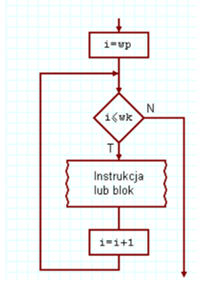
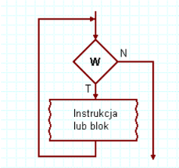
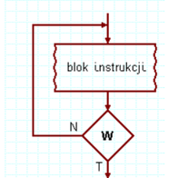

Pętla for
for (inicjalizacja; warunek; zmiana)
{
instrukcje;
}
Pętla for służy do powtarzania bloku kodu określone z góry zliczane razy, zazwyczaj przy użyciu wbudowanego licznika modyfikowanego co rundę.

Pętla While
while (warunek)
{
instrukcje;
}
Pętla while powtarza kod tak długo, jak długo spełniony jest dany warunek, sprawdzając go przed każdym wykonaniem (co oznacza, że może nie uruchomić się ani razu).

Pętla do While
do
{
instrukcje;
}
while (warunek);
Pętla do-while gwarantuje co najmniej jedno wykonanie kodu, ponieważ warunek kontynuacji sprawdza dopiero po zakończeniu każdej rundy.
